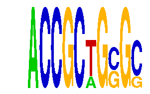

family_10 |
|---|
|  |
| Download PWM |
| Download instances (motifs) |
| Show motif distribution |
Query_ID | Query_Consensus | Subject_Name | Source_DB | Subject_ID | Length | Orientation | Offset | Divergence | Overlap | Subject_Consensus |
|---|
Sequence | Start_position (from start) | Start_position (from end) | Average conservation | Best conservation score | Instance_with_best_CS | Best_Z-score | Instance_with_best_ZS | Strand |
|---|---|---|---|---|---|---|---|---|
| chr4:129177474-129178869 | 392 | 402 | 0.0269 | 0.072 | ACCGCTGSGS | 32.700714 | ACCGCWGSGC | 1 |
| chr2:155207214-155208544 | 513 | 523 | 0.0094 | 0.035 | ACCGCWGSGC | 35.708115 | ACCGCTGSGS | -1 |
| chr7:28834176-28835456 | 965 | 975 | 0.0013 | 0.009 | ACCGCTGSGS | 35.708115 | ACCGCTGSGS | 1 |
| chr5:38951834-38953285 | 1088 | 1098 | 0.7918 | 0.87 | ACCGCTGSGS | 35.708115 | ACCGCTGSGS | 1 |
| chr6:113689890-113691093 | 130 | 140 | 0.0168 | 0.057 | ACCGCTGSGS | 32.700714 | ACCGCWGSGC | 1 |
| chr14:21894983-21896024 | 516 | 526 | 0.2336 | 0.965 | ACCGCWGSGC | 32.700714 | ACCGCWGSGC | -1 |
| chr4:134827446-134828751 | 1264 | 1274 | 0.2982 | 0.428 | ACCGCTGSGS | 32.700714 | ACCGCWGSGC | 1 |
| chr11:50172275-50173549 | 459 | 469 | 0.6099 | 0.99 | ACCGCTGSGS | 32.700714 | ACCGCWGSGC | 1 |
| chr8:72497295-72498410 | 610 | 620 | 0.0011 | 0.002 | ACCGCWGSGC | 32.700714 | ACCGCWGSGC | 1 |
| chr13:55422501-55424179 | 694 | 704 | 0.1136 | 0.349 | ACCGCWGSGC | 32.700714 | ACCGCWGSGC | -1 |
| chr11:120209030-120210152 | 626 | 636 | 0.0001 | 0.001 | ACCGCTGSGS | 35.708115 | ACCGCTGSGS | -1 |
| chr16:4541197-4542216 | 767 | 777 | 0.0088 | 0.029 | ACCGCTGSGS | 32.700714 | ACCGCWGSGC | 1 |
| chr15:80085540-80086571 | 232 | 242 | 0.0066 | 0.023 | ACCGCWGSGC | 32.700714 | ACCGCWGSGC | -1 |
| chr1:74082996-74084103 | 485 | 495 | 0.0067 | 0.026 | ACCGCTGSGS | 32.700714 | ACCGCWGSGC | 1 |
| chr16:36071004-36072342 | 467 | 477 | 0.0009 | 0.009 | ACCGCWGSGC | 32.700714 | ACCGCWGSGC | -1 |
| chr8:130882847-130884124 | 678 | 688 | 0.9975 | 1 | ACCGCTGSGS | 35.708115 | ACCGCTGSGS | -1 |
| chr2:26441799-26443028 | 621 | 631 | 0.5526 | 0.685 | ACCGCTGSGS | 32.700714 | ACCGCWGSGC | -1 |
| chr10:77471770-77472828 | 898 | 908 | 0.1006 | 0.132 | ACCGCWGSGC | 35.708115 | ACCGCTGSGS | -1 |
| chr16:37776865-37777987 | 599 | 609 | 0.0009 | 0.003 | ACCGCTGSGS | 35.708115 | ACCGCTGSGS | -1 |
| chr4:134090377-134091582 | 290 | 300 | 0.0007 | 0.002 | ACCGCTGSGS | 32.700714 | ACCGCWGSGC | -1 |
| chr10:127774430-127775465 | 637 | 647 | 0.9863 | 1 | ACCGCWGSGC | 32.700714 | ACCGCWGSGC | 1 |
| chr1:132993386-132994438 | 116 | 126 | 0.0029 | 0.02 | ACCGCTGSGS | 32.700714 | ACCGCWGSGC | 1 |
| chr11:120441757-120443354 | 630 | 640 | 0.0031 | 0.009 | ACCGCTGSGS | 32.700714 | ACCGCWGSGC | -1 |
| chr9:31018727-31019770 | 95 | 105 | 0.0001 | 0.001 | ACCGCTGSGS | 35.708115 | ACCGCTGSGS | 1 |
| chr5:144165126-144166376 | 332 | 342 | 0.3474 | 0.617 | ACCGCTGSGS | 35.708115 | ACCGCTGSGS | -1 |
| chr1:74438228-74439489 | 356 | 366 | 0.0005 | 0.002 | ACCGCWGSGC | 32.700714 | ACCGCWGSGC | -1 |
| chr6:127984353-127985469 | 688 | 698 | 0.9997 | 1 | ACCGCTGSGS | 32.700714 | ACCGCWGSGC | 1 |